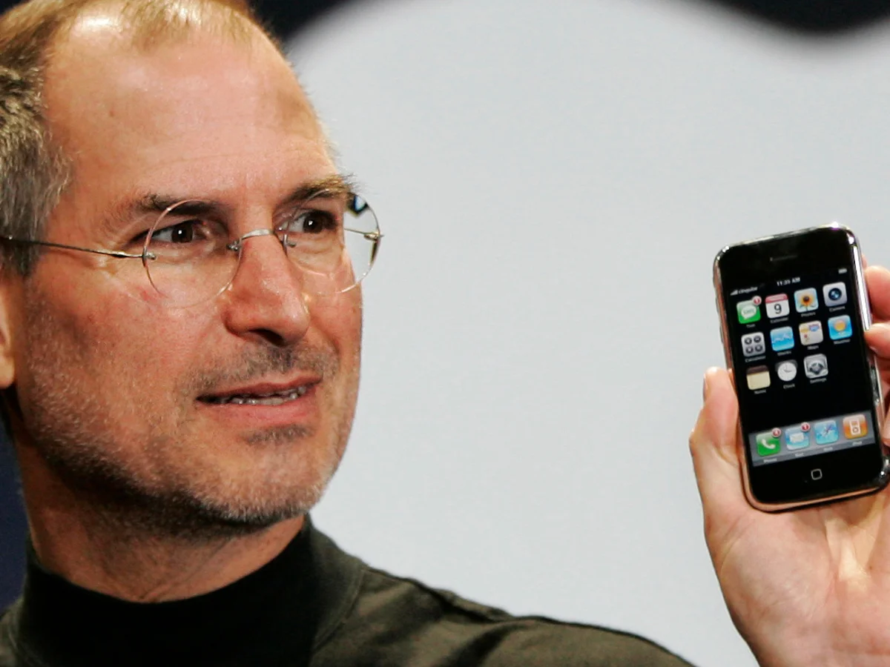

1994-2007
During this period, the first smartphones were introduced, combining mobile phone capabilities with features like email, web browsing, and multimedia. Notable devices include the IBM Simon (1994), Nokia 9000 Communicator (1996), and the BlackBerry 850 (1999). The early 2000s saw the rise of devices like the Palm Treo and the introduction of Apple's iPhone in 2007, which revolutionized the smartphone industry with its touch screen interface and app ecosystem.